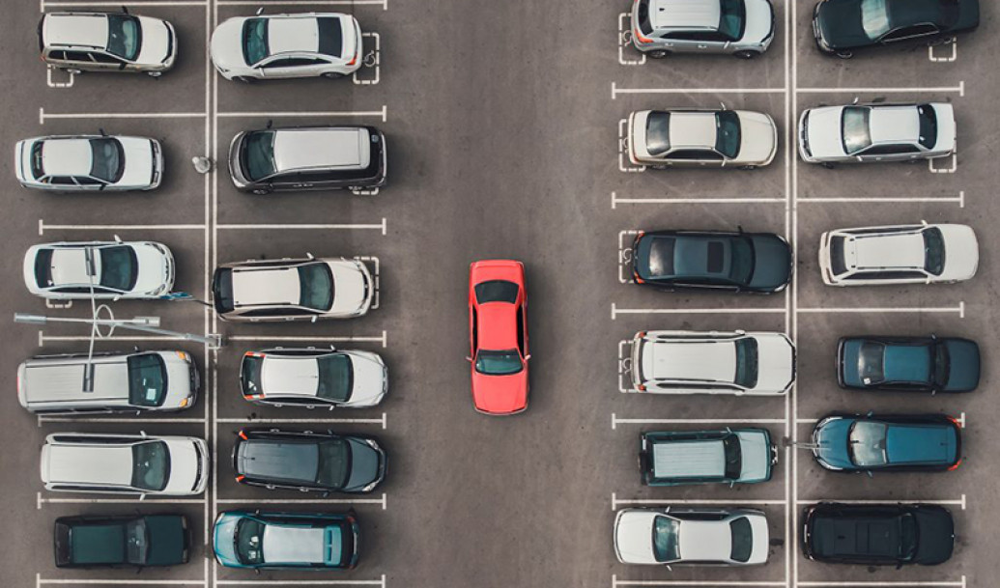
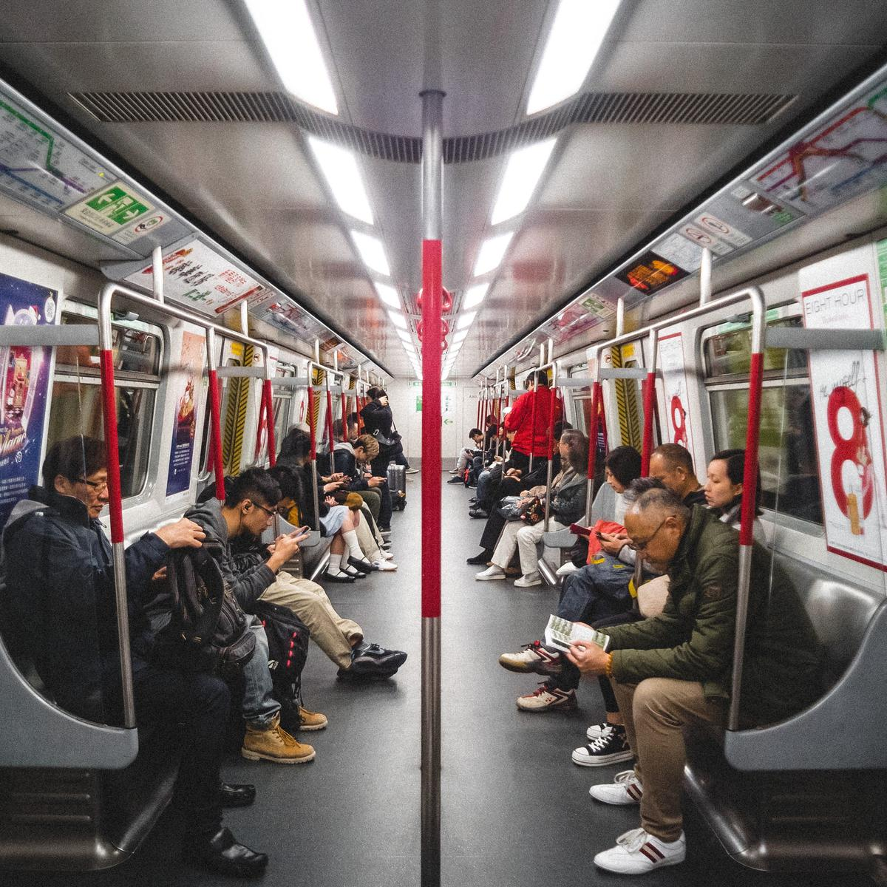
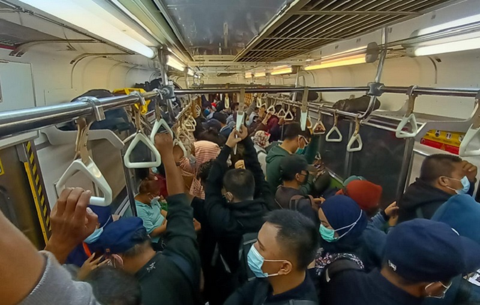
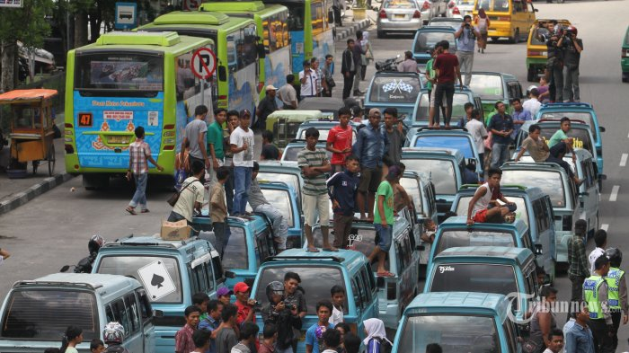
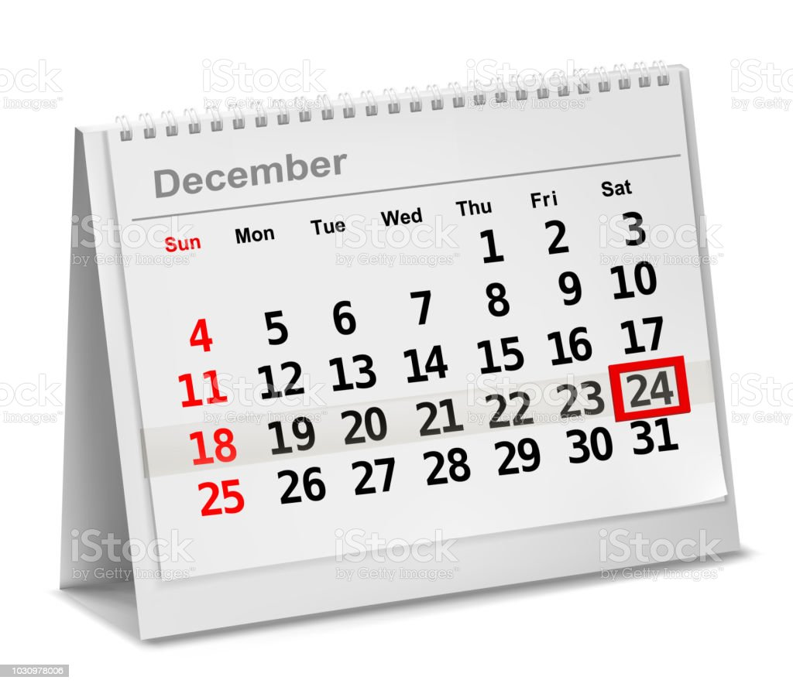
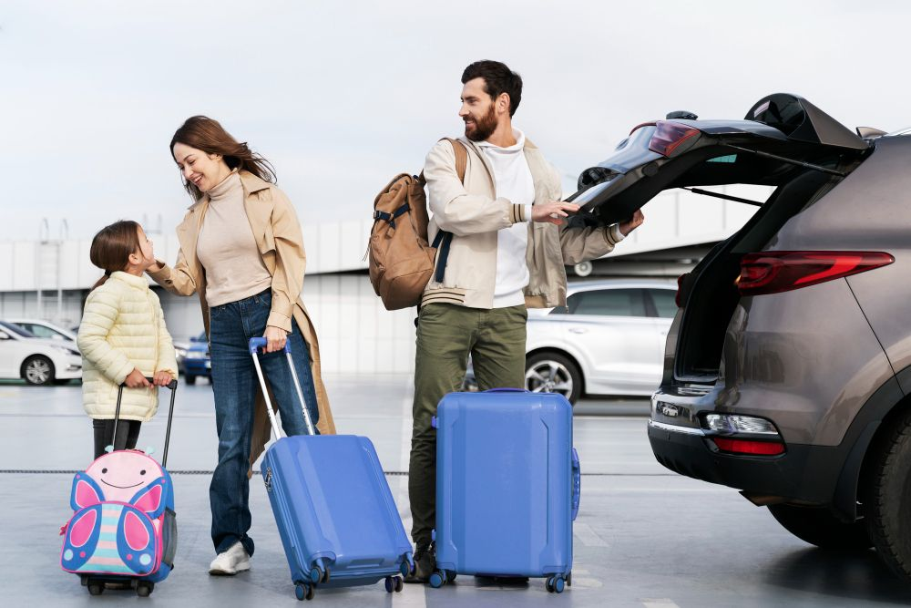
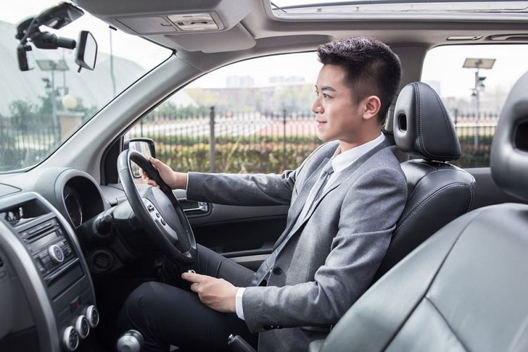
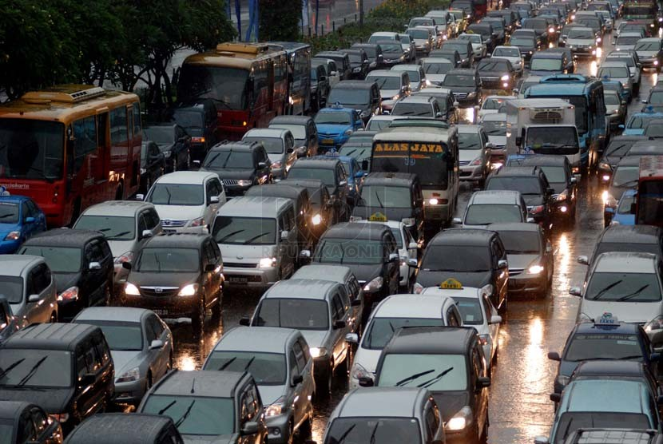
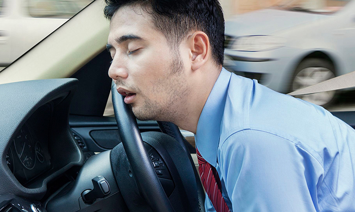
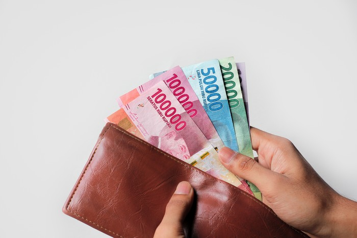

Kendaraan Yang Digunakan Saat Bepergian Keluar Kota

Content
Sebagian besar masyarakat yang mengadu nasib di daerah perkotaan mungkin sudah tidak asing lagi dengan kepadatan lalu lintas yang terjadi saat melakukan perjalanan. Berbagai titik kemacetan pun hampir selalu tercipta setiap harinya di sejumlah jalan protokol.
Kamu yang memiliki mobilitas tinggi, baik itu kuliah atau bekerja, mungkin terpaksa harus berangkat lebih pagi agar tidak terlambat sampai ke tujuan, terutama untuk kamu yang tinggal dengan jarak yang jauh. Berbicara tentang transportasi umum vs pribadi, kira-kira manakah yang paling tepat untuk mendukung segala mobilitas harianmu?
Ingatlah bahwa setiap pilihan kendaraan yang kamu gunakan memiliki kelebihan dan kekurangannya masing-masing. Misalnya, menggunakan transportasi umum bisa menjadi jalan pintas untuk kamu yang ingin lebih santai dalam berkendara, sayangnya jam operasional mereka memang cukup terbatas. Sementara itu, penggunaan kendaraan pribadi menawarkan fleksibilitas tanpa batas dan hemat ongkos, namun kamu tidak bisa menghindari kemacetan. Oleh karena itu saya sudah melakukan survei tentang hal ini. Lebih jelasnya, simak pembahasan berikut ini, yuk!
Daftar Isi
1. Kendaraan Umum

Angkutan umum merupakan sarana angkutan untuk masyarakat secara umum supaya dapat melaksanakan kegiatannya sesuai dengan tugas dan fungsinya dalam masyarakat. Pengguna angkutan umum ini bervariasi, mulai dari buruh, ibu rumah tangga, mahasiswa, pelajar, dan lain-lain. Kendaraan umum dibedakan menjadi 3 jenis yakni kendaraan darat,udara dan air
Kelebihan
1. Menghemat Pengeluaran
Tarif angkutan umum lebih murah jika dibandingkan dengan kendaraan pribadi. Dengan biaya Rp. 3.500/ perjalanan, Anda dapat bebas melakukan perjalanan dan transit kemana saja dengan nyaman dan aman tanpa panas-panasan. Kini, angkutan umum juga menyediakan layanan cashless menggunakan kartu e-money atau e-wallet, sehingga penumpang tidak perlu repot-repot membawa uang tunai. Tentunya, akan menekan biaya pengeluaran pemeliharaan kendaraan dan bisa dialihkan ke kebutuhan lainnya.
2. Keamanan dan kenyamanan Terjamin

Modal transportasi seperti Trans Jogja atau Teman Bus mengunggulkan keamanan dan kenyamanan. Ada kursi empuk yang nyaman untuk diduduki, AC yang dingin, bus yang luas, ramah disabilitas, dan CCTV untuk mencegah dari tindakan kejahatan. Secara tidak langsung menggunakan angkutan umum dapat menurunkan jumlah kecelakaan di jalan. Pastinya tingkat kecelakaan yang rendah juga mengurangi kerugian sebuah kota.
3. Tidak perlu mencari parkir
Mencari tempat parkir yang kosong membutuhkan waktu, sehingga jika menaiki transportasi umum dapat menghemat waktu. Belum jika semua tempat parkir penuh, maka harus mencari-cari terlebih dahulu yang membuat pusing. Inilah kelebihan angkutan umum. Jika mempunyai kendaraan pribadi, Anda juga harus siap mempunyai lahan parkir yang tidak mengganggu masyarakat dan mengambil jalan umum. Tambah pusing, kan?
4. Hemat Tenaga
Cukup dengan duduk santai dan beristirahat sejenak, Anda sudah mencapai tempat tujuan Anda. Tanpa repot-repot menyetir yang memperlakukan fokus yang tentu lebih menguras tenaga dibandingkan hanya duduk saja di angkutan umum yang dikendarai supir atau masinis. Apalagi jika harus berhadapan dengan kemacetan yang dapat menimbulkan stress akan semakin melelahkan.
Kekurangan
1. Waktu Operasional yang terbatas
Sering kali, orang-orang merasa kesulitan ketika harus melakukan perjalanan saat larut malam, mengingat sebagian besar transportasi umum biasanya menerapkan jam operasional tertentu. Opsi transportasi berbasis online pun terpaksa harus diambil meski terbilang cukup mahal. Ini menjadi sesuatu yang kurang menguntungkan. Lain halnya jika kamu membawa kendaraan pribadi.
2. Berdesakan dengan penumpang lain
Ketika menggunakan transportasi umum artinya Anda sudah siap berdesakan dengan banyak penumpang lain yang tidak dikenal. Terlebih pada jam-jam berangkat dan pulang kerja. Sudah menjadi hal lumrah jika melihat transportasi publik seperti bus dan kereta dipenuhi dengan banyak orang yang hendak berangkat kerja. Hal itu umumnya dapat dilihat di kota-kota sibuk di dunia. Bahkan secanggih apa pun transportasi publiknya, nyatanya belum mampu mengubah citra dalam menggunakan transportasi publik. Ini juga sekaligus menjadi alasan utama mengapa banyak orang masih memilih menggunakan transportasi pribadi dibandingkan transportasi umum.
3. Rawan kemacetan
Ketika menggunakan transportasi umum, kita masih rentan terkena kemacetan, terutama jika kita tinggal di kota besar yang padat penduduknya. Meskipun transportasi umum memiliki jalur khusus di beberapa kota, tetap saja waktu perjalanan bisa lebih lama dari yang diharapkan.
4. Terikat oleh jadwal
Salah satu kelemahan utama dari menggunakan transportasi umum adalah kita terikat pada jadwal keberangkatan dan kedatangan yang telah ditentukan. Ini berarti kita harus mengatur jadwal kita dengan baik untuk memastikan kita tiba tepat waktu di kantor.
2. Kendaraan Pribadi
Angkutan pribadi adalah angkutan yang menggunakan kendaraan pribadi, seperti mobil pribadi, sepeda motor, sepeda, tetapi bisa juga menggunakan bus yang biasanya digunakan untuk keperluan pribadi. Angkutan pribadi merupakan lawan kata angkutan umum. Transportasi dengan menggunakan kendaraan pribadi biasanya lebih mahal dari transportasi menggunakan angkutan umum karena alasan efisiensi angkutan umum yang lebih baik.
Kelebihan
1. Flexsibel
Salah satu kelebihan transportasi pribadi adalah sifatnya yang fleksibel dan bisa dibawa berkendara kapan saja. Jika ingin pulang larut malam, kamu pun tidak harus dikejar-kejar waktu lagi seperti layaknya hendak menaiki transportasi umum. Keberadaan transportasi pribadi juga akan sangat berguna saat kondisi darurat. Misalnya, kamu bisa langsung mengeluarkan kendaraan dari garasi bila ada anggota keluarga yang harus segera dirujuk ke rumah sakit terdekat.
2. Lebih hemat ongkos
Sudah menjadi rahasia umum kalau menggunakan kendaraan pribadi akan membantumu lebih bisa menghemat anggaran transportasi, terutama bagi kamu yang harus menempuh jarak jauh untuk bisa sampai ke kantor. Karena bila harus menaiki kendaraan umum, mungkin kamu perlu melakukan pergantian kendaraan hingga beberapa kali terlebih dahulu untuk bisa tiba di lokasi, sehingga kamu perlu mengeluarkan ongkos yang jauh lebih tinggi.
3. Nyaman dan Privasi
Naik kendaraan pribadi memberikan privasi dan kenyamanan yang tidak dapat ditemukan dalam transportasi umum. Kamu bisa menikmati perjalanan tanpa harus berdesak-desakan dengan orang lain.
4. Lebih leluasa/bebas
Salah satu kelebihan kendaraan pribadi yakni kita bisa leluasa dan bebas jika kita ingin berhenti dimanapun dan kapanpun Khusus untuk perjalanan jarak jauh memang tidaklah mudah, apalagi dengan durasi perjalanan yang tak sebentar. Kadang kala, kamu akan merasa lelah atau pun keinginan untuk buang air. Jika menggunakan kendaraan pribadi, kamu bebas untuk berhenti di rest area. Kamu jadi dapat menggunakan kesempatan tersebut untuk beristirahat, makan, atau pun buang air. Tentunya perjalanan pun menjadi lebih menyenangkan dengan hal tersebut.
Kekurangan
1. Menambah Polusi
Tidak bisa dipungkiri bahwa kendaraan pribadi memang menjadi salah satu kontributor polusi udara terbesar di wilayah perkotaan. Apalagi bahan bakar minyak juga diketahui kurang ramah lingkungan. Sementara itu, masyarakat yang memilih untuk menggunakan kendaraan pribadi terus meningkat pesat. Maka tak heran, bila pencemaran udara semakin merajalela.
2. Kemacetan
Naik kendaraan pribadi tidak menjamin kamu terhindar dari kemacetan. Kadang-kadang, bahkan dapat lebih sulit untuk mencari tempat parkir di kantor, terutama jika kantor kamu terletak di pusat kota yang padat.
3. Lebih capek Ketika di perjalanan
Jika kita menggunakan kendaraan pribadi kita akan merasakan kelelahan saat di perjalanan, berbeda dengan kendaraan umum kitab isa duduk santai sambal melihat pemandangan
4. Harus siapkan biaya urgent
Jika saat kita diperjalanan terjadi hal yang tak terduga seperti ban bocor ,bbm habis dan lain-lain maka kita harus menanggung semua itu dengan sendiri,jadi kita harus menyiapkan dana untuk kebutuhan urgent Ketika di perjalanan.
3. Kesimpulan
Berdasarkan survey yang telah saya lakukan, saya mendapatkan hasil survey sebanyak 80 Responden dengan rincian sebanyak 73 Orang atau 91.25% memilih kendaraan pribadi dan sebanyak 7 Orang atau 8.75% memilih kendaraan umum. Untuk lebih jelasnya simak hasil survey dibawah ini.
Jenis Kendaraan
| Jenis Kendaraan | Jumlah Responden | Presentase (%) |
|---|---|---|
| Kendaraan Pribadi | 73 Orang | 91.25 % |
| Kendaraan Umum | 7 Orang | 8.75 % |
Dan dari 7 responden yang memilih kendaraan umum hanya tiga transportasi yang dipilih, yakni Bus, Kereta Api, dan Pesawat dengan rincian 5 responden memilih Bus 1 orang memilih Kereta Api dan sisanya memilih Pesawat. Berikut untuk lebih jelasnya.
Kendaraan Umum
| Nama Kendaraan | Jumlah Responden | Presentase (%) |
|---|---|---|
| Bus | 5 Orang | 71.4 % |
| Kereta Api | 1 Orang | 14.3 % |
| Pesawat | 1 Orang | 14.3 % |
Sedangkan dari 73 responden yang memilih kendaraan pribadi rata-rata mereka lebih memilih menggunakan Motor daripada menggunakan kendaraan pribadi lainnya dengan alasan lebih nyaman, berikut rincian dari responden yang memilih menggunakan kendaraan pribadi: 51 orang atau 69.9% dari 73 responden memilih menggunakan motor dan 16 orang atau 21.9% lebih memilih menggunakan mobil, sedangkan sisanya memilih menggunakan sepeda. Berikut untuk data lebih jelasnya!
Kendaraan Pribadi
| Nama Kendaraan | Jumlah Responden | Presentase (%) |
|---|---|---|
| Mobil | 16 Orang | 21.9 % |
| Motor | 51 Orang | 69.9 % |
| Sepeda | 6 Orang | 8.2 % |
4. Penutup
Nah, itu dia kelebihan dan kekurangan dari transportasi umum vs pribadi. Apa pun jenis kendaraan yang kamu pilih, baik itu transportasi umum atau pribadi, pastikan untuk mempertimbangkan faktor-faktor di atas tadi. Meski demikian, cost pengeluaran selalu menjadi aspek yang paling penting untuk diperhitungkan, mengingat hasilnya dapat berbeda-beda di setiap orang. Tapi jangan sampai lupa untuk mempertimbangkan kenyamanan, serta mana pilihan kendaraan yang bisa lebih cepat membawamu sampai ke tempat tujuan.
Misalnya, jika menggunakan transportasi umum terbukti bisa menekan biaya ongkos perbulannya, maka pilihan yang satu ini mungkin bisa menjadi alternatif yang menjanjikan, namun bila ternyata jauh lebih mahal, maka kamu bisa memilih untuk membawa kendaraan pribadi. Jangan lupa juga untuk mempertimbangkan aspek kenyamanan, serta mana pilihan kendaraan yang bisa lebih cepat membawamu sampai ke tempat tujuan.
Intinya adalah transportasi umum tetap lebih baik digunakan bagi masyarakat yang tinggal di daerah perkotaan. Karena dengan menggunakan transportasi umum, masyarakat ikut serta dalam upaya mengurangi kemacetan dan mengurangi polusi udara yang semakin parah. Tetapi, karena adanya daerah yang belum menyediakan transportasi umum secara maksimal dan memadai. Maka berakibat pada pilihan masyarakat untuk tetap menggunakan kendaraan pribadi masih tinggi. Dan tentunya, pemerintah juga harus melakukan sosialisasi kepada masyarakat, agar kesadaran akan penggunaan transportasi umum bisa lebih meningkat. Namun, pada akhirnya itu semua kembali kepada kebutuhan masing-masing individu.
Oke, sekian pembahasan mengenai kendaraan umum dan pribadi, semoga dengan artikel ini bisa membantu anda dalam menentukan kendaraan mana yang lebih baik digunakan saat bepergian. Saya selaku admin Belajar Bareng mohon maaf bila ada salah dalam menyampaikan artikel ini baik secara tulisan maupun lain sebagainnya. Silahkan tinggalkan saran dan kritik anda dikolom komentar dibawah. Sekian terimakasih semoga membantu :).